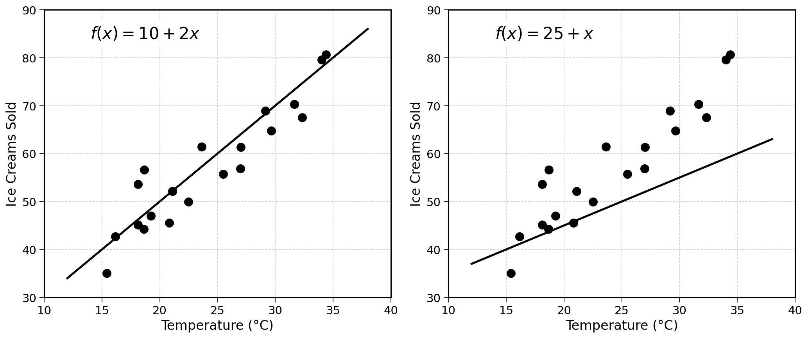
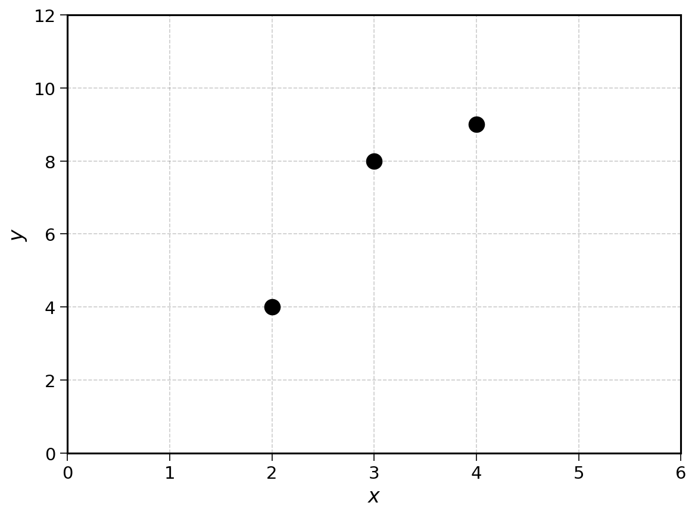
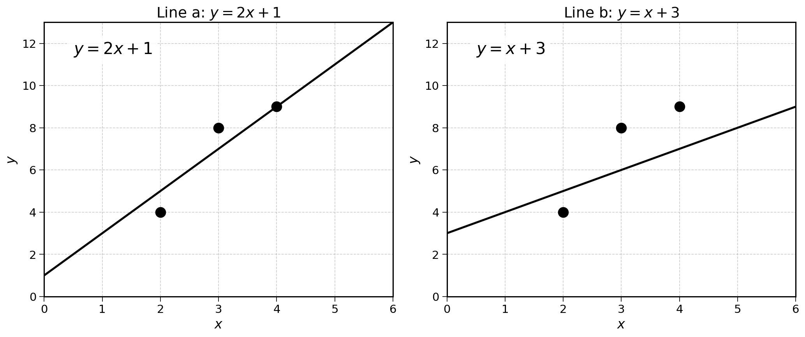
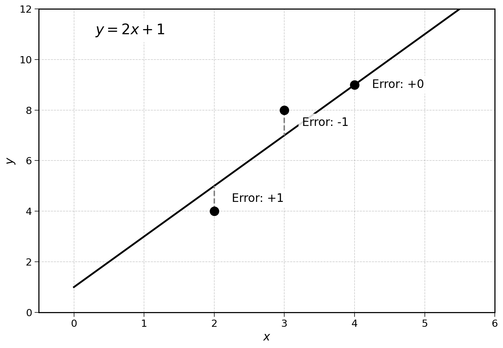
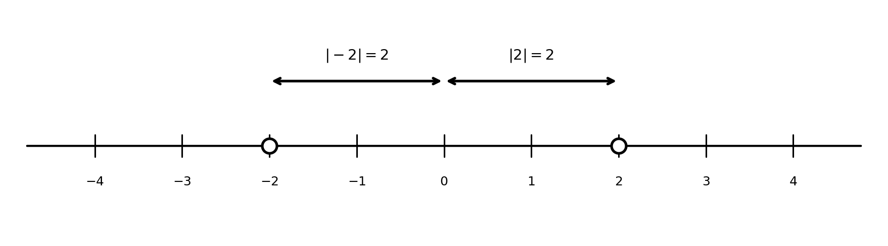

5 Evaluating Regression Quality
As mentioned in the introduction, the objective of a linear regression is to generate predictions. In the example of ice cream sales, the goal is to predict the number of ice creams sold based on the temperature.

Of these two lines, which generates the best ice cream sales predictions? Intuitively, the left line seems a lot more correct. But why?
5.1 Closeness to the Data
Geometrically, the good regression line is the closest to the points of the training data.
Looking at a temperature of 25 degrees:
- The left regression (good) predicts approximately 60 ice cream sales
- The right regression (poor) predicts approximately 50 ice cream sales
Looking at the historical data points near 25 degrees, the actual sales seem to be around 55-65. The left prediction is relatively close to what happened in the past. The right one under-predicts compared to historical data.
5.2 Why Does This Matter?
If we are trying to predict future ice cream sales, we want a model that learns the patterns in historical data. A line that is far from the historical observations is unlikely to make good predictions for new temperatures.
If the model cannot even predict past events correctly, how could we trust it to predict the future?
Exercise 5.1 Looking at the two regression lines shown previously, estimate the prediction each would make for a temperature of 30 degrees Celsius. Which prediction do you think would be closer to reality?
A visual evaluation works for small examples, but could be insufficient in the following situations:
- Many data points
- Subtle differences between models
- Sharing results with others
Can a single number measure how good a line can approximate historical data? Let’s start by considering a simpler case, in which there are only three observations:

Let’s draw two competing linear regressions:

5.3 Error on a Single Point
Now, looking at a single point with coordinates (3, 8), what are the predictions generated by the linear regressions a and b?
Looking at the plot:
- Line a (\(y = 2x + 1\)): when \(x = 3\), we get a predicted value of \(2 \times 3 + 1 = 7\)
- Line b (\(y = x + 3\)): when \(x = 3\), we get a predicted value of \(3 + 3 = 6\)
For both of these, what was the prediction error? How do we measure how far the line was from the individual point?
The most straightforward method is subtraction:
\[ \text{Error} = \text{Predicted Value} - \text{Actual Value} \]
Computing the error of line a for the point (3, 8), we get:
\[ \text{Error}_a = 7 - 8 = -1 \]
This can be read as: “Line a under-predicted the value of point (3, 8) by 1”.
Exercise 5.2 Show that the prediction error of line b for the point (3, 8) is −2.
5.4 Aggregating Errors
With this method, we can compute the error of any line for any point. Not bad. Yet, for a series of three observations (like in the example above), we would end up with three numbers per line:
| \(x\) | \(y\) | Prediction (Line a) | Error (Line a) |
|---|---|---|---|
| 2 | 4 | 5 | +1 |
| 3 | 8 | 7 | −1 |
| 4 | 9 | 9 | 0 |
How can we move from three numbers to a single one? We could average all the error numbers to get an average error.
For \(n\) points, we could compute the average error as follows:
\[ \text{Average Error} = \frac{\text{Error}_1 + \text{Error}_2 + \cdots + \text{Error}_n}{n} \]
Applying this to our example with line a:

We would get the following average error:
\[ \text{Average Error} = \frac{1 + (-1) + 0}{3} = \frac{0}{3} = 0 \]
The average error is 0. Does that mean that our model is perfect? No, and far from it. This just shows that the errors of the linear regression cancel out. The line has an error of 1 in the positive direction (over-prediction) and of 1 in the negative direction (under-prediction). This information is valuable.
However, the perfect model would also have an average error of 0 too. Based on the average error, we would have no way to differentiate the perfect model and this imperfect model. Can we do better?
There are two mathematical tricks to avoid this cancelling out:
- Absolute value of the difference
- Squared difference
5.4.1 Absolute Value
The absolute value is the magnitude of a number, its distance from 0, regardless of its sign. As an example, the absolute value of −2 is 2. Why? Regardless of its sign, or direction, −2 is 2 away from 0. The absolute value of any number \(x\) is noted as \(|x|\).

More rigorously: \(|-2| = |2| = 2\)
To avoid errors cancelling out, we can take the absolute value of the prediction error before averaging them. The number we get from this process is the mean absolute error (MAE).
\[ \text{MAE} = \frac{|\text{Error}_1| + |\text{Error}_2| + \cdots + |\text{Error}_n|}{n} \]
Applying this to the example data with line a:
| \(x\) | \(y\) | Prediction | Error | \(|\)Error\(|\) |
|---|---|---|---|---|
| 2 | 4 | 5 | +1 | 1 |
| 3 | 8 | 7 | −1 | 1 |
| 4 | 9 | 9 | 0 | 0 |
We get the following MAE:
\[ \text{MAE}_a = \frac{|1| + |-1| + |0|}{3} = \frac{1 + 1 + 0}{3} = \frac{2}{3} \]
We are getting somewhere. The MAE shows that, on average, linear regression predictions were \(\frac{2}{3}\) away from the real value.
The MAE of the perfect model would still be 0, as \(|0| = 0\). This way, the MAE would allow us to rank models whether or not their errors cancel out.
5.4.2 Squared Difference
Another way to prevent errors from cancelling out is to square them. Squaring a number means multiplying a number by itself:
\[ 3^2 = 3 \times 3 = 9 \]
This formula can be read as “Three squared is equal to three times three”. Conveniently, when squaring negative numbers, the negative sign cancels out:
\[ (-3)^2 = (-3) \times (-3) = 9 \]
To measure a model’s accuracy we could take the average of its squared errors. This is called the mean squared error (MSE).
\[ \text{MSE} = \frac{\text{Error}_1^2 + \text{Error}_2^2 + \cdots + \text{Error}_n^2}{n} \]
Going back to the example data with line a:
| \(x\) | \(y\) | Prediction | Error | Error² |
|---|---|---|---|---|
| 2 | 4 | 5 | +1 | 1 |
| 3 | 8 | 7 | −1 | 1 |
| 4 | 9 | 9 | 0 | 0 |
We get:
\[ \text{MSE}_a = \frac{1^2 + (-1)^2 + 0^2}{3} = \frac{1 + 1 + 0}{3} = \frac{2}{3} \]
On average, the model has a squared error of \(\frac{2}{3}\). Just like the MAE, the MSE of the perfect model would be 0. Using the MSE, we could also differentiate the perfect model from Model a or b.
Exercise 5.3 Calculate the MAE and MSE for line b (\(y = x + 3\)) using the three data points.
| \(x\) | \(y\) | Prediction (Line b) |
|---|---|---|
| 2 | 4 | 5 |
| 3 | 8 | 6 |
| 4 | 9 | 7 |
Which line (a or b) has the lower error?
5.5 Final Thoughts
In this chapter, we learned how to measure the quality of a regression line using two metrics:
- Mean absolute error (MAE): the average of the absolute differences between predictions and actual values
- Mean squared error (MSE): the average of the squared differences between predictions and actual values
Both metrics have the property that lower is better; a perfect model would have MAE = MSE = 0.
The MSE is particularly important in linear regression because, as we will see in future chapters, it has mathematical properties that make it easier to find the best-fitting line. Finding the optimal slope and intercept to minimize the MSE is at the heart of linear regression.
5.6 Solutions
Solution 5.1. Exercise 5.1
At a temperature of 30 degrees Celsius:
Good regression (left chart): Using \(f(x) = 10 + 2x\): \[f(30) = 10 + 2 \times 30 = 70\]
Poor regression (right chart): Using \(f(x) = 25 + x\): \[f(30) = 25 + 30 = 55\]
Looking at the data points around 30 degrees in the scatter plot, the actual sales appear to be around 65-75. The good regression’s prediction of 70 is much closer to this range than the poor regression’s prediction of 55.
Solution 5.2. Exercise 5.2
For line b (\(y = x + 3\)) and the point (3, 8):
\[ \text{Predicted Value} = 3 + 3 = 6 \]
\[ \text{Error}_b = \text{Predicted} - \text{Actual} = 6 - 8 = -2 \]
The error is −2, meaning line b under-predicted by 2.
Solution 5.3. Exercise 5.3
First, let’s calculate the predictions and errors for line b (\(y = x + 3\)):
| \(x\) | \(y\) | Prediction | Error | \(|\)Error\(|\) | Error² |
|---|---|---|---|---|---|
| 2 | 4 | 5 | +1 | 1 | 1 |
| 3 | 8 | 6 | −2 | 2 | 4 |
| 4 | 9 | 7 | −2 | 2 | 4 |
MAE for line b: \[ \text{MAE}_b = \frac{1 + 2 + 2}{3} = \frac{5}{3} \approx 1.67 \]
MSE for line b: \[ \text{MSE}_b = \frac{1 + 4 + 4}{3} = \frac{9}{3} = 3 \]
Comparison:
| Line a | Line b | |
|---|---|---|
| MAE | 0.67 | 1.67 |
| MSE | 0.67 | 3 |
Line a has lower error by both metrics, confirming our visual intuition that it fits the data better.